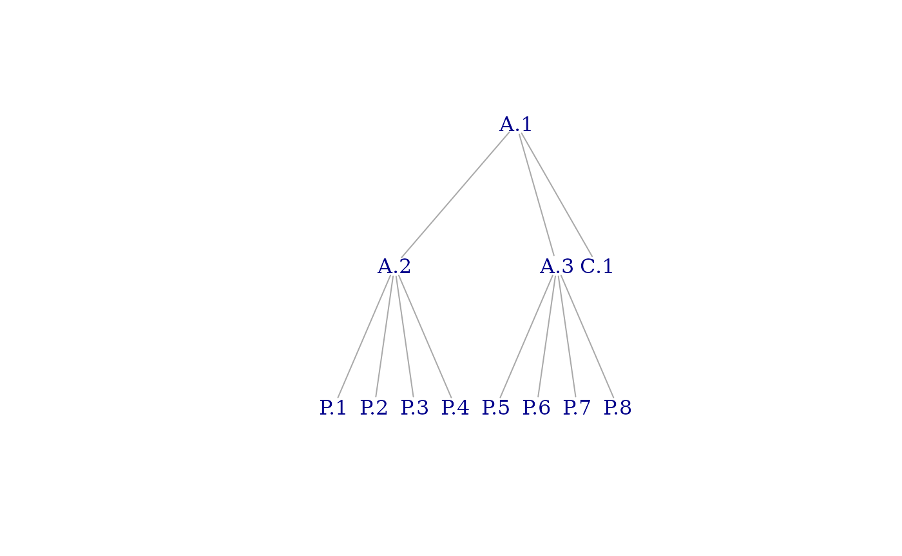

Overview
The massProps package extends rollupTree
with functions to recursively calculate mass properties (and optionally,
their uncertainties) for arbitrary decomposition trees. Formulas
implemented are described in a technical paper published by the Society
of Allied Weight Engineers (Zimmerman and Nakai
2005).
Synopsis
Data Structures
massProps operates on two fundamental data structures: a
mass properties table and a tree. The mass properties table has an entry
for every item in a tree structure of items; the edges of the tree
convey the parent-child relations among items. The two data structures
are linked by the id column of the data frame, which must
be a character vector of unique item identifiers, and the vertex names
of the tree. The sets of identifiers must be identical.
Mass Property Table
Required Columns for Mass Properties
The Mass Property Table must contain the following columns. Other columns may exist and will remain unmodified.
idunique identifier for each item (row)massmass of the item (numeric)Cx-component of center of mass (numeric)Cy-component of center of mass (numeric)Cx-component of center of mass (numeric)Ixxmoment of inertia about the axis (numeric)Iyymoment of inertia about the axis (numeric)Izzmoment of inertia about the axis (numeric)Ixyproduct of inertia relative to the and axes (numeric)Ixzproduct of inertia relative to the and axes (numeric)Iyzproduct of inertia relative to the and axes (numeric)POIconveither ‘+’ or ‘-’, indicating the sign convention for products of inertia. In the negative convention, for example, . In the positive convention, .Ipointlogical indicator that this item is considered a point mass. The same algebraic result can be achieved by setting all moments and products of inertia to zero, butrollup_mass_props()by default ensures that all leaf items in the tree have mass properties that correspond to physically-realizable objects. A zero inertia tensor will fail this check. Rather than relax the check (which is essential for trustworthy results), aTRUEvalue forIpointindicates that the inertia tensor should be excluded from computations.
Required Columns for Mass Properties Uncertainties
The following columns are required for uncertainty calculations:
sigma_massmass uncertainty (numeric)sigma_Cx-component of center of mass uncertainty (numeric)sigma_Cy-component of center of mass uncertainty (numeric)sigma_Cx-component of center of mass uncertainty (numeric)sigma_Ixxmoment of inertia about the axis uncertainty (numeric)sigma_Iyymoment of inertia about the axis uncertainty (numeric)sigma_Izzmoment of inertia about the axis uncertainty (numeric)sigma_Ixyproduct of inertia relative to the and axes uncertainty (numeric)sigma_Ixzproduct of inertia relative to the and axes uncertainty (numeric)sigma_Iyzproduct of inertia relative to the and axes uncertainty (numeric)
It is the caller’s responsibility to ensure that all values are expressed in appropriate and compatible units.
Tree
The tree is an igraph::graph with vertices named by
identifiers in the mass properties table. It can be of arbitrary depth
and shape as long as it satisfies certain well-formedness
properties:
it is connected and acyclic (as an undirected graph), i.e., it is a tree
it is directed, with edge direction going from child to parent
it contains neither loops (self-edges) nor multiple edges
it contains a single root vertex (i.e., one whose out degree is zero)
Invocation
Suppose we have the following mass properties table:
test_table
#> id parent mass Cx Cy Cz Ixx Ixy Ixz Iyy Iyz Izz POIconv Ipoint
#> 1 A.1 NA NA NA NA NA NA NA NA NA NA - FALSE
#> 2 A.2 A.1 NA NA NA NA NA NA NA NA NA NA - FALSE
#> 3 A.3 A.1 NA NA NA NA NA NA NA NA NA NA - FALSE
#> 4 C.1 A.1 5 0 0 0 80 -4.0 -24.0 80 -24.0 75 - FALSE
#> 5 P.1 A.2 2 1 1 1 4 -0.1 -0.1 4 0.1 4 - FALSE
#> 6 P.2 A.2 2 1 1 -1 4 -0.1 -0.1 4 0.1 4 - FALSE
#> 7 P.3 A.2 2 1 -1 1 4 -0.1 -0.1 4 0.1 4 - FALSE
#> 8 P.4 A.2 2 1 -1 -1 4 -0.1 -0.1 4 0.1 4 - FALSE
#> 9 P.5 A.3 2 -1 1 1 4 -0.1 -0.1 4 0.1 4 - FALSE
#> 10 P.6 A.3 2 -1 1 -1 4 -0.1 -0.1 4 0.1 4 - FALSE
#> 11 P.7 A.3 2 -1 -1 1 4 -0.1 -0.1 4 0.1 4 - FALSE
#> 12 P.8 A.3 2 -1 -1 -1 4 -0.1 -0.1 4 0.1 4 - FALSESuppose we also have this tree:
library(igraph)
test_tree
#> IGRAPH 7d8200c DN-- 12 11 --
#> + attr: name (v/c)
#> + edges from 7d8200c (vertex names):
#> [1] A.2->A.1 A.3->A.1 C.1->A.1 P.1->A.2 P.2->A.2 P.3->A.2 P.4->A.2 P.5->A.3
#> [9] P.6->A.3 P.7->A.3 P.8->A.3
Then we can compute mass properties for non-leaf elements by calling
rollup_mass_props():
rollup_mass_props(test_tree, test_table)
#> id parent mass Cx Cy Cz Ixx Ixy Ixz Iyy Iyz Izz POIconv Ipoint
#> 1 A.1 21 0 0 0 144 -4.8 -24.8 144 -23.2 139 - FALSE
#> 2 A.2 A.1 8 1 0 0 32 -0.4 -0.4 24 0.4 24 - FALSE
#> 3 A.3 A.1 8 -1 0 0 32 -0.4 -0.4 24 0.4 24 - FALSE
#> 4 C.1 A.1 5 0 0 0 80 -4.0 -24.0 80 -24.0 75 - FALSE
#> 5 P.1 A.2 2 1 1 1 4 -0.1 -0.1 4 0.1 4 - FALSE
#> 6 P.2 A.2 2 1 1 -1 4 -0.1 -0.1 4 0.1 4 - FALSE
#> 7 P.3 A.2 2 1 -1 1 4 -0.1 -0.1 4 0.1 4 - FALSE
#> 8 P.4 A.2 2 1 -1 -1 4 -0.1 -0.1 4 0.1 4 - FALSE
#> 9 P.5 A.3 2 -1 1 1 4 -0.1 -0.1 4 0.1 4 - FALSE
#> 10 P.6 A.3 2 -1 1 -1 4 -0.1 -0.1 4 0.1 4 - FALSE
#> 11 P.7 A.3 2 -1 -1 1 4 -0.1 -0.1 4 0.1 4 - FALSE
#> 12 P.8 A.3 2 -1 -1 -1 4 -0.1 -0.1 4 0.1 4 - FALSENote that, although the table shows the parent of each element for clarity of exposition, the child-parent relations are coneveyed only by the tree passed as the first argument.
The input may also contain uncertainties data. This example is from the Society of Allied Weight Engineers:
sawe_input
#> id mass Cx Cy Cz Ixx Iyy Izz Ixy Ixz
#> 1 Widget 57.83 121.2 0.04 -0.16 7258.90 8607.02 10453.40 834.44 -1198.38
#> 2 2nd Part 16.80 70.9 -0.95 0.46 65.07 1124.65 1078.82 76.01 202.83
#> 3 Combined NA NA NA NA NA NA NA NA NA
#> Iyz sigma_mass sigma_Cx sigma_Cy sigma_Cz sigma_Ixx sigma_Iyy sigma_Izz
#> 1 -1066.58 1.2416 0.2764 0.2085 0.0669 386.9233 171.4792 414.5547
#> 2 13.62 1.7308 0.6234 0.5173 0.1405 12.4687 109.1324 108.5481
#> 3 NA NA NA NA NA NA NA NA
#> sigma_Ixy sigma_Ixz sigma_Iyz Ipoint POIconv
#> 1 1440.5402 344.6237 124.6860 FALSE +
#> 2 55.8879 212.1241 11.5408 FALSE +
#> 3 NA NA NA FALSE +
rollup_mass_props_and_unc(sawe_tree, sawe_input)
#> id mass Cx Cy Cz Ixx Iyy Izz
#> 1 Widget 57.83 121.2000 0.0400000 -0.16000000 7258.900 8607.02 10453.40
#> 2 2nd Part 16.80 70.9000 -0.9500000 0.46000000 65.070 1124.65 1078.82
#> 3 Combined 74.63 109.8769 -0.1828594 -0.02043146 7341.733 42673.75 44482.05
#> Ixy Ixz Iyz sigma_mass sigma_Cx sigma_Cy sigma_Cz
#> 1 834.440 -1198.380 -1066.580 1.24160 0.27640 0.2085000 0.06690000
#> 2 76.010 202.830 13.620 1.73080 0.62340 0.5173000 0.14050000
#> 3 1558.714 -1401.534 -1060.951 2.13008 0.95821 0.1999847 0.06178402
#> sigma_Ixx sigma_Iyy sigma_Izz sigma_Ixy sigma_Ixz sigma_Iyz Ipoint POIconv
#> 1 386.9233 171.4792 414.5547 1440.5402 344.6237 124.6860 FALSE +
#> 2 12.4687 109.1324 108.5481 55.8879 212.1241 11.5408 FALSE +
#> 3 387.4017 2789.3133 2815.3260 1488.0948 418.6048 125.3175 FALSE +Objectives and Strategy
The objective of this package is to provide a trustworthy, well-documented, reference implementation for computation of mass properties (and their uncertainties) of aggregate objects from those of their parts. Aggregation can be recursive (e.g., indentured Bill of Materials), so it must accommodate trees of arbitrary depth and shape.
Strategies for achieving the objective include
basing the calculations on published industry references,
re-casting those lengthy reference equations into concise vector or matrix forms to reduce the error surface for source code and exploit the capabilities of
R, which treats vectors and matrices as first-class objects,delegating orchestration to the
rollupTreepackage, which, among other things, verifies that the input tree is well-formed and ensures proper ordering of computations,ensuring that all asserted leaf mass properties and uncertainties correspond to physically-realizable objects,
coding in pure functional style, (i.e., avoiding mutable variables, implying iteration with
Map()andReduce()), andcovering the entire code base with unit tests.
The author has intentionally made no effort to micro-optimize for performance. In particular, the author is aware that representing the inertia and its uncertainty as 3 ⨉ 3 matrices is “inefficient” to the degree that it independently calculates values that are redundant by symmetry. “Inefficient”, however, does not mean “slow”. See Performance Evaluation below.
Theory
In this section, we state the reference equations (Zimmerman and Nakai 2005) and show, where applicable, how those equations can be rewritten in more concise form. The form of the equations actually implemented is displayed within a box, e.g. .
The reference uses the word weight and the symbol in equations. We interpret weight as mass. The reference refers to center of mass by its , , and components. Symbols for moments () and products () of inertia are conventional. Variables with subscripts designate properties of parts; those without designate properties of aggregates. The letter denotes uncertainty. , for example, is the mass uncertainty.
Mass Properties
Mass
The mass equation is suitable as is.
The corresponding R code is
In this and the following code snippets, the variable
mpl is a list of input mass property sets for parts, the
variable mp is a formal parameter of an anonymous function
applied to each member of mpl, and amp is the
resulting aggregate mass property set. The line above is an
R functional programming idiom for “set the mass value of
the aggregate to the sum of the mass values of the parts”.
Inertia Tensor
Matrix Formulation
Let be the inertia tensor of the aggregate and be that of part . The equations for products of inertia above clearly follow the positive integral convention, so
and similarly for .
Noting the repeated appearance of terms of the form , we form the outer product
Then
Let be the matrix of inertia tensor summands from the reference equations. That is,
where
where is the trace of , i.e., the sum of its diagonal elements, and is the 3⨉3 identity matrix. Therefore
where
The corresponding R code is
Mass Property Uncertainties
Center of Mass Uncertainty
As before, we create a 3-vector for center of mass uncertainties. Let
If we construe (as R does) squaring and taking square
roots of vectors element-wise, then
The corresponding R code is
Inertia Tensor Uncertainty
Matrix Formulation
Let
Then
Let be the matrix of inertia tensor uncertainty summands in the standard formulas for a given subcomponent above. That is,
Let , , and be the respective diagonal elements of . Let be the 3 ⨉ 3 identity matrix. If we interpret squaring a matrix as the Hadamard (element-wise) product with itself, then
Finally,
where
The corresponding R code is
amp$sigma_inertia = sqrt(Reduce(`+`, Map(
f = function(mp) {
d <- mp$center_mass - amp$center_mass
P <- outer(d, mp$sigma_center_mass)
p <- diag(P)
Q <- outer(d, d)
M1 <- P - diag(p - 2 * p[c("y", "x", "x")])
M2 <- t(P) - diag(p - 2 * p[c("z", "z", "y")])
M3 <- Q - sum(diag(Q)) * diag(3)
M4 <- mp$mass^2 * (M1^2 + M2^2) + (mp$sigma_mass * M3)^2
if (mp$point) M4 else mp$sigma_inertia^2 + M4
},
mpl
)))Radii of Gyration and Their Uncertainties
By definition:
Let
Then
The corresponding R code is
rg <- get_mass_props(d, i)
rg$radii_gyration <- sqrt(diag(rg$inertia) / rg$mass)The SAWE reference gives equations for uncertainties of radii of gyration in recursive form, but as these radii are simply functions of moments of inertia and mass, we should be able to express their uncertainties in terms of uncertainties of moments of inertia and mass by applying standard uncertainty propagation theory (Wikipedia contributors 2024).
Let
Then
where is the covariance between and .
Let and be random variables such that
where and for all , and for all , and for all and . It is clear from the linearity of and in and that
and Therefore,
Exploiting symmetry, let
Therefore, we define
The corresponding R code is
amp <- get_mass_props_and_unc(ds, target)
I <- diag(amp$inertia)
sigma_I <- diag(amp$sigma_inertia)
amp$sigma_radii_gyration <- sqrt(
sigma_I^2 / (amp$mass * I) + (I * amp$sigma_mass^2) / amp$mass^3 -
2 / amp$mass^2 * Reduce(
`+`,
Map(
f = function(s) {
mp <- get_mass_props_and_unc(ds, s)
d2 <- (mp$center_mass - amp$center_mass)^2
mp$sigma_mass^2 * (sum(d2) - d2)
},
sources
),
init = c(0, 0, 0)
)
) / 2Testing and Validation
Comparison With Independently-Calculated Results
In this section we will calculate the results for the SAWE example step by step and compare them with the package results. The inputs are:
#> id mass Cx Cy Cz Ixx Iyy Izz Ixy Ixz
#> 1 Widget 57.83 121.2 0.04 -0.16 7258.90 8607.02 10453.40 834.44 -1198.38
#> 2 2nd Part 16.80 70.9 -0.95 0.46 65.07 1124.65 1078.82 76.01 202.83
#> Iyz sigma_mass sigma_Cx sigma_Cy sigma_Cz sigma_Ixx sigma_Iyy sigma_Izz
#> 1 -1066.58 1.2416 0.2764 0.2085 0.0669 386.9233 171.4792 414.5547
#> 2 13.62 1.7308 0.6234 0.5173 0.1405 12.4687 109.1324 108.5481
#> sigma_Ixy sigma_Ixz sigma_Iyz Ipoint POIconv
#> 1 1440.5402 344.6237 124.6860 FALSE +
#> 2 55.8879 212.1241 11.5408 FALSE +Our computed result is
t <- rollup_radii_of_gyration_unc(sawe_tree,
add_radii_of_gyration(
rollup_mass_props_and_unc(sawe_tree, sawe_table)
)
)
sawe_result <- t[t$id == "Combined", ]
sawe_result
#> id mass Cx Cy Cz Ixx Iyy Izz
#> 3 Combined 74.63 109.8769 -0.1828594 -0.02043146 7341.733 42673.75 44482.05
#> Ixy Ixz Iyz sigma_mass sigma_Cx sigma_Cy sigma_Cz
#> 3 1558.714 -1401.534 -1060.951 2.13008 0.95821 0.1999847 0.06178402
#> sigma_Ixx sigma_Iyy sigma_Izz sigma_Ixy sigma_Ixz sigma_Iyz Ipoint POIconv
#> 3 387.4017 2789.313 2815.326 1488.095 418.6048 125.3175 FALSE +
#> kx ky kz sigma_kx sigma_ky sigma_kz
#> 3 9.918422 23.91243 24.41382 0.2971248 0.5484836 0.5402033Mass
mass <- sum(sawe_input$mass)The independently-calculated mass is
#> [1] 74.63This agrees with the computed result.
Center of Mass
The independently-calculated center of mass is
#> Cx Cy Cz
#> 109.87693957 -0.18285944 -0.02043146This agrees with the computed result.
Moments of Inertia
moi <- function(I, v1, v2, m, c1, c2) {
sum(I + m * ((v1^2 + v2^2) - (c1^2 + c2^2)))
}
MOI <- c(
Ixx = moi(sawe_input$Ixx, sawe_input$Cy, sawe_input$Cz, sawe_input$mass, C["Cy"], C["Cz"]),
Iyy = moi(sawe_input$Iyy, sawe_input$Cx, sawe_input$Cz, sawe_input$mass, C["Cx"], C["Cz"]),
Izz = moi(sawe_input$Izz, sawe_input$Cx, sawe_input$Cy, sawe_input$mass, C["Cx"], C["Cy"])
)The independently-calculated moments of inertia are
#> Ixx Iyy Izz
#> 7341.733 42673.747 44482.052This agrees with the computed result.
Products of Inertia
poi <- function(I, v1, v2, m, c1, c2) {
sum(I + m * (v1 * v2 - c1 * c2))
}
POI <- c(
Ixy = poi(sawe_input$Ixy, sawe_input$Cx, sawe_input$Cy, sawe_input$mass, C["Cx"], C["Cy"]),
Ixz = poi(sawe_input$Ixz, sawe_input$Cx, sawe_input$Cz, sawe_input$mass, C["Cx"], C["Cz"]),
Iyz = poi(sawe_input$Iyz, sawe_input$Cy, sawe_input$Cz, sawe_input$mass, C["Cy"], C["Cz"])
)The independently-calculated products of inertia are
#> Ixy Ixz Iyz
#> 1558.714 -1401.534 -1060.951This agrees with the computed result.
Radii of Gyration
rog <- function(I, m) sqrt(I / m)
ROG <- c(
kx = rog(sawe_result$Ixx, sawe_result$mass),
ky = rog(sawe_result$Iyy, sawe_result$mass),
kz = rog(sawe_result$Izz, sawe_result$mass)
)The independently-calculated radii of gyration are
#> kx ky kz
#> 9.918422 23.912428 24.413817This agrees with the computed result.
Mass Uncertainty
The independently-calculated mass uncertainty is
#> [1] 2.13008This agrees with the computed result.
Center of Mass Uncertainty
sigma_cm <- function(m, sigma_v, sigma_m, v, c, mass) {
sqrt(sum((m * sigma_v)^2 + (sigma_m * (v - c))^2)) / mass
}
sigma_C <- c(
sigma_Cx = sigma_cm(sawe_input$mass, sawe_input$sigma_Cx, sawe_input$sigma_mass, sawe_input$Cx, C["Cx"], mass),
sigma_Cy = sigma_cm(sawe_input$mass, sawe_input$sigma_Cy, sawe_input$sigma_mass, sawe_input$Cy, C["Cy"], mass),
sigma_Cz = sigma_cm(sawe_input$mass, sawe_input$sigma_Cz, sawe_input$sigma_mass, sawe_input$Cz, C["Cz"], mass)
)The independently-calculated center of mass uncertainties are
#> sigma_Cx sigma_Cy sigma_Cz
#> 0.95821004 0.19998470 0.06178402This agrees with the computed result.
Moments of Inertia Uncertainties
sigma_moi <- function(sigma_I, mass, sigma_mass, v1, v2, c1, c2, sigma_v1, sigma_v2) {
sqrt(sum(
sigma_I^2 +
(2 * mass * (v1 - c1) * sigma_v1)^2 +
(2 * mass * (v2 - c2) * sigma_v2)^2 +
(((v1 - c1)^2 + (v2 - c2)^2) * sigma_mass)^2
))
}
sigma_MOI <- c(
sigma_Ixx = sigma_moi(sawe_input$sigma_Ixx, sawe_input$mass, sawe_input$sigma_mass, sawe_input$Cy,
sawe_input$Cz, C["Cy"], C["Cz"], sawe_input$sigma_Cy, sawe_input$sigma_Cz),
sigma_Iyy = sigma_moi(sawe_input$sigma_Iyy, sawe_input$mass, sawe_input$sigma_mass, sawe_input$Cx,
sawe_input$Cz, C["Cx"], C["Cz"], sawe_input$sigma_Cx, sawe_input$sigma_Cz),
sigma_Izz = sigma_moi(sawe_input$sigma_Izz, sawe_input$mass, sawe_input$sigma_mass, sawe_input$Cx,
sawe_input$Cy, C["Cx"], C["Cy"], sawe_input$sigma_Cx, sawe_input$sigma_Cy)
)The independently-calculated moments of inertia uncertainties are
#> sigma_Ixx sigma_Iyy sigma_Izz
#> 387.4017 2789.3133 2815.3260This agrees with the computed result.
Products of Inertia Uncertainties
sigma_poi <- function(sigma_I, mass, sigma_mass, v1, v2, c1, c2, sigma_v1, sigma_v2) {
sqrt(sum(
sigma_I^2 +
((v1 - c1) * mass * sigma_v2)^2 +
((v1 - c1) * (v2 - c2) * sigma_mass)^2 +
((v2 - c2) * mass * sigma_v1)^2
))
}
sigma_POI <- c(
sigma_Ixy = sigma_poi(sawe_input$sigma_Ixy, sawe_input$mass, sawe_input$sigma_mass, sawe_input$Cx,
sawe_input$Cy, C["Cx"], C["Cy"], sawe_input$sigma_Cx, sawe_input$sigma_Cy),
sigma_Ixz = sigma_poi(sawe_input$sigma_Ixz, sawe_input$mass, sawe_input$sigma_mass, sawe_input$Cx,
sawe_input$Cz, C["Cx"], C["Cz"], sawe_input$sigma_Cx, sawe_input$sigma_Cz),
sigma_Iyz = sigma_poi(sawe_input$sigma_Iyz, sawe_input$mass, sawe_input$sigma_mass, sawe_input$Cy,
sawe_input$Cz, C["Cy"], C["Cz"], sawe_input$sigma_Cy, sawe_input$sigma_Cz)
)The independently-calculated products of inertia uncertainties are
#> sigma_Ixy sigma_Ixz sigma_Iyz
#> 1488.0948 418.6048 125.3175This agrees with the computed result.
Radii of Gyration Uncertainties
sigma_rog <- function(mt, It, sigma_mt, sigma_It, v1, c1, v2, c2, sigma_m) {
sqrt(sigma_It^2 / (4 * mt * It) + (It * sigma_mt^2) / (4 * mt^3) - sum(sigma_m^2 * ((v1 - c1)^2 + (v2 - c2)^2)) / (2 * mt^2))
}
sigma_ROG <- c(
sigma_kx = sigma_rog(sawe_result$mass, sawe_result$Ixx, sawe_result$sigma_mass, sawe_result$sigma_Ixx,
sawe_input$Cy, sawe_result$Cy, sawe_input$Cz, sawe_result$Cz, sawe_input$sigma_mass),
sigma_ky = sigma_rog(sawe_result$mass, sawe_result$Iyy, sawe_result$sigma_mass, sawe_result$sigma_Iyy,
sawe_input$Cx, sawe_result$Cx, sawe_input$Cz, sawe_result$Cz, sawe_input$sigma_mass),
sigma_kz = sigma_rog(sawe_result$mass, sawe_result$Izz, sawe_result$sigma_mass, sawe_result$sigma_Izz,
sawe_input$Cx, sawe_result$Cx, sawe_input$Cy, sawe_result$Cy, sawe_input$sigma_mass)
)The independently-calculated radii of gyration uncertainties are
#> sigma_kx sigma_ky sigma_kz
#> 0.2971248 0.5484836 0.5402033This agrees with the computed result.
Comparison With Published Results
The SAWE reference provides computed results for their example (excluding radii of gyration and their uncertainties). These results match those within a tolerance of 0.2%. The small differences are likely because their actual input values were not identical to the truncated values published in the article.
Performance Evaluation
mp_table and mp_tree are a synthesized data
set representing a tree of depth 7 with 1765 vertices and 1764 edges.
1267 vertices are leaves, the remaining 498 are non-leaves. Rolling up
mass properties and uncertainties for this data set combines 35280 input
values to produce 9960 output values. Mass properties alone halves those
values.
Benchmarks were taken on a platform with these CPU characteristics:
Python Version: 3.12.7.final.0 (64 bit)
Cpuinfo Version: 9.0.0
Vendor ID Raw:
Hardware Raw:
Brand Raw: Apple M3
Hz Advertised Friendly:
Hz Actual Friendly: 2.4000 GHz
Hz Advertised:
Hz Actual: (2400000000, 0)
Arch: ARM_8
Bits: 64
Count: 8
Arch String Raw: arm64
L1 Data Cache Size:
L1 Instruction Cache Size:
L2 Cache Size:
L2 Cache Line Size:
L2 Cache Associativity:
L3 Cache Size:
Stepping:
Model:
Family: 6
Processor Type:
Flags: acpi, aes, apic, clfsh, cmov, cx16, cx8, de, ds, dscpl, dtse64, est, fpu, fxsr, htt, mca, mce, mmx, mon, msr, mtrr, pae, pat, pbe, pclmulqdq, pdcm, pge, pse, pse36, seglim64, sep, ss, sse, sse2, sse3, sse4.1, sse4.2, ssse3, tm, tm2, tpr, tsc, vme, vmxBenchmark results for rollup of mass properties and uncertainties were taken with and without input validation:
benchmark('mp + unc no validation' = rollup_mass_props_and_unc_fast(mp_tree, mp_table),
'mp + unc validation' = rollup_mass_props_and_unc(mp_tree, mp_table),
'mp no validation' = rollup_mass_props_fast(mp_tree, mp_table),
'mp validation' = rollup_mass_props(mp_tree, mp_table),
replications = 10,
columns = c("test", "replications", "elapsed", "user.self", "sys.self")
) |> mutate(elapsed = elapsed / 10, user.self = user.self / 10, sys.self = sys.self / 10)Times reported are in seconds.
test replications elapsed user.self sys.self
4 mp validation 10 1.0340 1.0182 0.0161
3 mp no validation 10 0.6926 0.6821 0.0106
2 mp + unc validation 10 1.6079 1.5814 0.0268
1 mp + unc no validation 10 1.0657 1.0465 0.0194